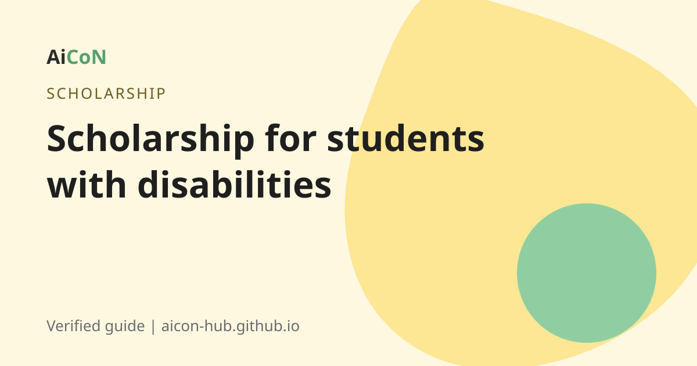

Post-Matric Scholarship for students with disabilities: apply by 31 October 2026
This central scholarship helps students with a benchmark disability study after Class 10. You apply on the National Scholarship Portal (NSP). Before you submit, you must give consent on the UDID portal. Student applications close on 31 October 2026.

What is it?
The Department of Empowerment of Persons with Disabilities runs a scheme of scholarships for students with benchmark disabilities. Its post-matric part covers Class XI up to post-graduate degree or diploma. The scholarship pays allowances and course fees under the scheme rules.
The earlier AiCoN post said there are 17,000 scholarships a year. We did not find that number in the guidelines we read, so we do not repeat it.
Who can apply?
- The student must have a benchmark disability. The guidelines use the Rights of Persons with Disabilities Act, 2016: not less than 40 percent of a specified disability.
- Parents or guardians' income from all sources must not exceed Rs 2,50,000 a year for post-matric (official guidelines).
- The student studies a course covered by the scheme at a recognised institution. A 2025 revision of the guidelines adds that courses must be approved by bodies such as UGC, State or UT governments and councils like NMC, RCI and AICTE.
Important dates for 2026-27
| Scheme opened | 25 July 2026 |
|---|---|
| Last date for students | 31 October 2026 |
| Defective application and institute verification | till 15 November 2026 |
| DNO/SNO/MNO verification | till 30 November 2026 |
Dates are from the NSP "All Scholarships" page, 6 October 2026.
How to apply, step by step
- Get your UDID (Unique Disability ID) card if you do not have one.
- NSP announcement: all disabled students must first log in to the UDID portal and give consent to share UDID details. Without this step they cannot submit the application on NSP.
- Open scholarships.gov.in and do the One Time Registration (OTR).
- Log in and choose the Post Matric Scholarship for Students with Disabilities.
- Fill in the form and upload the documents: income proof, disability proof, admission proof, bank details.
- Submit before 31 October 2026.
- Your institute must verify the application. Follow up with them.
- Track the status on NSP.
Cost, eligibility and limits
| Cost to apply | Free. |
|---|---|
| Who | Students with benchmark disability (40% or more), family income up to Rs 2.5 lakh a year. |
| Where | All of India. Kerala students apply on the same NSP. |
| Limits | The UDID consent step is a must. Institute verification is needed. |
Stay safe
- Use only scholarships.gov.in and the UDID portal.
- No one can guarantee a scholarship for money.
Frequently asked questions
What is the last date?
31 October 2026 for students.
What is the income limit?
Rs 2,50,000 a year, from the official guidelines.
Do I need a UDID?
The NSP announcement says disabled students must give consent on the UDID portal before applying.
What disability level is needed?
Benchmark disability, which means 40 percent or more of a specified disability.
Is there a fee?
No.
Sources: National Scholarship Portal, NSP All Scholarships (dates), Scheme guidelines (DEPD), 2025 guideline revision. Checked 6 October 2026.